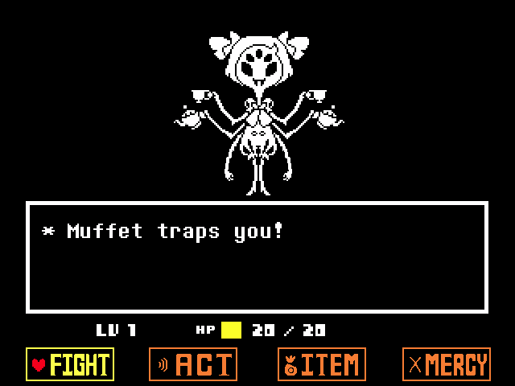
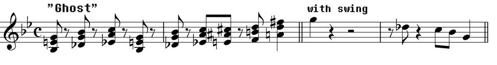

Spider Dance
This track plays as you fight Miss Muffet in the Hot Lands in Undertale. It's the 59th track in the soundtrack. While its BPM is 115 and the key it is played in is F minor with a time signature of 2, what makes this track interesting is its leitmotif it contains. The leitmotif is Ghost Fight which is also a name of another track (this is somewhat of a trend with the other leitmotifs).

Ghost Fight leitmotif

All the songs that have this leitmotif are:
- "Ghost Fight":
- "Dummy!":
- "Pathetic House":
- "Spider Dance":
- "Mad Mew Mew":
Reference
- “Leitmotifs.” Undertale Wiki, undertale.fandom.com/wiki/Leitmotifs#Ghost_Fight. Accessed 14 Apr. 2026.
- Spider Dance.” Undertale Wiki, undertale.fandom.com/wiki/Spider_Dance. Accessed 14 Apr. 2026.